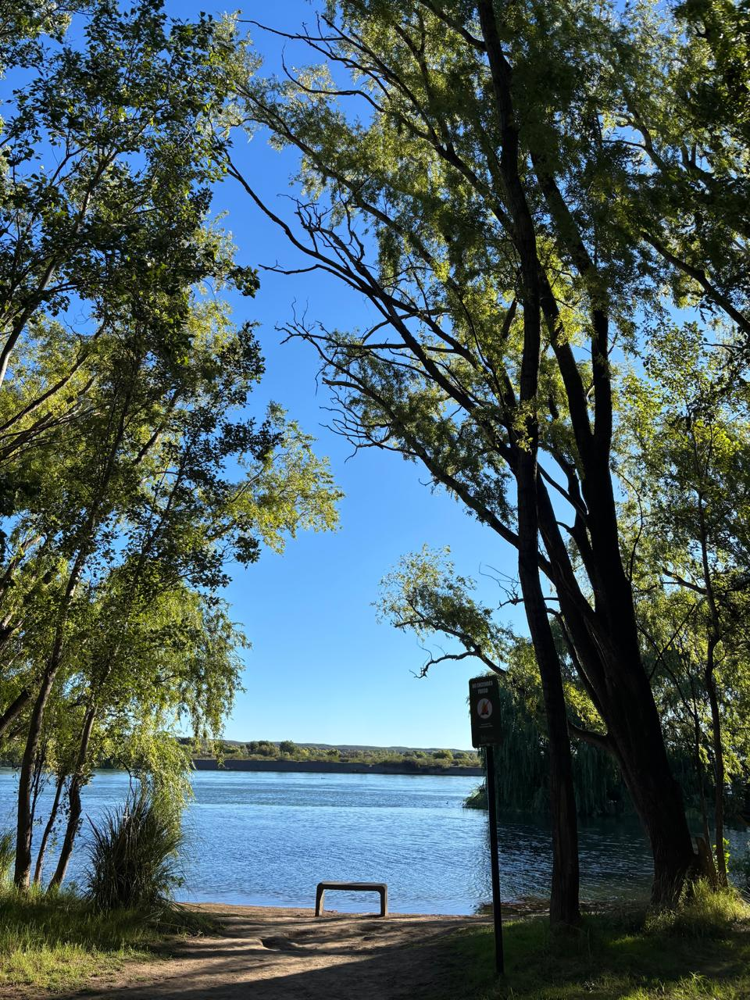
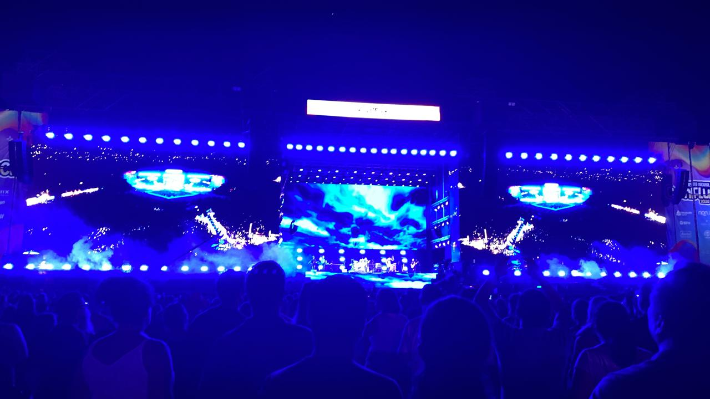

Mi viaje a Neuquén: música, paisajes y amistad
Publicado el:
Por: Milagros Mozun
La Confluencia
Uno de los lugares más lindos que conocimos en Neuquén fue la Confluencia, donde se unen los ríos Limay y Neuquén. Es un espacio muy especial, con una energía muy tranquila y paisajes que invitan a frenar un poco y disfrutar del momento.

Caminar por ahí, ver el río y compartir ese momento fue algo simple pero muy significativo. Es de esos lugares que no necesitan mucho más para ser especiales.
La Fiesta de la Confluencia
Otro de los momentos más inolvidables del viaje fue haber ido a la Fiesta de la Confluencia. El día que fuimos tocaron bandas como La Beriso, Kapanga y No Te Va Gustar, así que el ambiente estaba lleno de energía, música y emoción.

Fue una experiencia muy intensa y divertida, de esas que se disfrutan muchísimo más cuando estás con las personas correctas. Cantar, saltar y vivir ese momento juntos lo hizo todavía más especial.
Lo más importante del viaje
Más allá de los lugares y las experiencias, lo más importante de este viaje fue haberlo compartido con dos amigos que me dejó la facultad y que hoy siento como hermanos.
Todo el viaje tuvo otro valor por haberlo compartido con ellos. Son personas que quiero muchísimo y con las que construí un vínculo muy especial.
Este viaje no solo me queda como un recuerdo por Neuquén, sino por lo que significó a nivel personal. Porque al final, los lugares son lindos, pero lo que realmente hace inolvidable un viaje es con quién lo compartís.